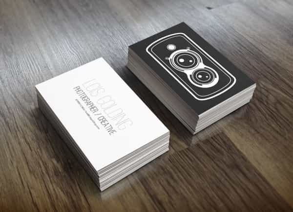
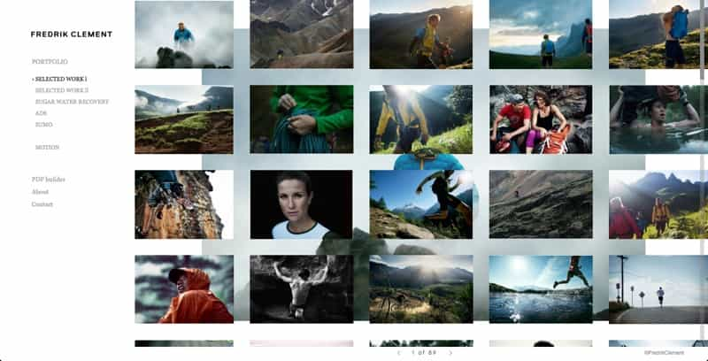
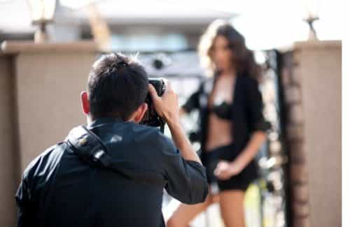

< < < Back
How To Gain Access To Hot Girls By Becoming A Photographer – Return Of Kings
During my last trip to Ukraine, I met my friend’s childhood friend. He knew Kiev and showed us around. He struck me as a total beta male from the first encounter—limp fish handshake, frail constitution, almost no eye contact, and a quiet voice as if he was running out of air every time he spoke.

Think of a prison bitch body with Cuck Rogen’s face
Our discussion soon gravitated around hobbies and he told us about his passion for photography that helped him supplement his income. He focused on glamorous portraits of girls. When he showed us his portfolio, I was in awe at the quality of the models and that the majority of them where only wearing g-strings. Nothing under an 8 by Eastern European standards.
Wasted resources
Hundreds of photos with girls of the same level as this one.
I showed my joy at the perspective that I perhaps misjudged him:
Me: Those are insanely good looking girls. I bet the shooting gets out of hand half the time and you end up banging the model on the table, you dog!
Photographer: No. I can’t do that! I have to be professional! I never landed a finger on them.
Me : How long have you been doing that?
Photographer: Almost six years now.
I was gobsmacked that he never tried to escalate or exploit that amount of beauty constantly gravitating around him. The man regularly takes pictures of amazing girls in lingerie or naked and never made a move or banged one.
He has no idea of his potential worth and does not feel that he is entitled to plow those girls. That is why his dick stays parked in his boxers when he photographs naked beautiful women. What a waste of material and a hopeless beta attitude.
He does photography only as a hobby but has had 180,000 views on just one photographic platform (and it was not the likes of Facebook or Instagram). His audience reach in the city was tremendous. And although he met those girls through social circles, a lot of them contacted HIM. This is an example of a man that is handling gold every day and has no idea what to do with it.
The tools
This plan came up to me last month and let me tell you that I have no extensive knowledge of photography apart from snapping nudes of the girls I just bedded. But that didn’t stop me from executing my plan. I know that I will apply the following steps and I will be successful because the camera is to a woman what a flame is to a moth: irresistible. It appeals naturally to her constant need for attention and narcissistic nature. This is how you can exploit it:
- Get a second-hand camera with a lens on Craigslist or Gumtree. It needs to be digital as it is too time-consuming to print the photos if you don’t enjoy it. SD cards transfer easily to PCs to be enhanced manually. Before the face-to-face purchase, check its autonomy, the control screen, if the SD cards works, etc. You do not need a professional one that costs a large amount of money. You only need it to “look” professional.

Perfect for what you need to do with it
- Get business cards printed on websites like this one. Costs around $10 for a hundred of them. That will get you started. You don’t even have to put your real name, you can just use your platform’s name.

- Dress well so it sends a “wealthy but casual” look: nice shoes and watch but dressed for the weather. You have to distance yourself from the “creep” image by being outrageously confident.
- Hang out where the hot girls are.
The portfolio
This is perhaps as important as your camera and confidence. It is your resume to gain access to her panties.
You need to be on a platform for them to find you and see your work. Use Pinterest, Facebook or the most popular local social network if you are travelling. Choose an attractive profile pic in your bio by applying the same methods used for online dating (here’s a useful guide by 20Nation). Having a well-designed logo doesn’t hurt.
Include “photo”, “photography”, “pictures”, “art” or “models” when you create the name of your platform. You will be addressing the dumbest fringes of the population. Your plan needs to be idiot proof.
Create a personal portfolio that you will use on all the platforms with a few of your own pictures (landscapes or anything with an artistic vibe to start with) plus attractive but REALISTIC girls that are beautiful but still have flaws.

Add a few glamour shoots from websites like Shutterstock or Pixabay. Change the angle and colours or mirror it. Use those for now and once you have gained the sufficient amount of personal material and followers, remove them.
And of course there’s Instagram, where all modern Babylonian whores come sell themselves for the clicks of love-starved betas. Shoot three of four girls to start with, even if you don’t have sex with them, before opening an account. I am a neophyte with Instagram (I would use this to start with) and despise the whole concept, but we have to keep up with the times if we want attractive sluts to keep deflating our balls.
Don’t forget to tag her in it and tell the harlot to like and comment as she will rarely have something more important to do. The more tags and shares, the higher the value displayed.
I wonder if adding monuments or neutral pictures would have a positive or negative effect with my targets. On the one hand, adding photos without girls give them plausible deniability as I am “not only doing that to get girls”. On the other hand, photos with girls only would increase value as I show clearly that I am not here to play around, screening against girls for which sex is not an option.
The opener
Approach the hottest girls in your area. Girls who know they are unattractive will not get their picture taken by a pro (those who would still accept are leftists and should be discarded). Tell her that she has an interesting outfit, unusual body frame, or severe nose. Do it in a way that is unusual and could be interpreted as a subtle neg. No direct compliment of her beauty—it only lowers your value compared to hers.
If she has questions, say that you try to capture the spirit of the local people for your portfolio or that you are preparing a project for an art exhibition back home. Another option is to say that you are a talent scout for a clothing brand or an agency with juicy contracts for motivated models.
You are lying. And? Women lie all the time, about their looks, their sexual past, why they went to Dubai, their attraction to status and money, or their promiscuous dating to sort out which suitor has the highest income or status. You want to play fair and be sure to get results? Then stop gaming girls and grow turnips.
First type of photoshoot
Take a few pictures right after the approach. When it’s time to part, give her your card, take her number and then contact her later. If both of you are not in a hurry, take her for one quick drink, build rapport, then propose a photoshoot in a park near a monument or at a nearby beach. Give her the business card with the website where she can check out your portfolio.
If I plan the first photoshoot with a shy girl, I would bring her in some isolated natural spot with drinks, document the encounter, have fun, and try to bang her. Bonus if it is in a wheat field with pagan imagery and fresh air.
You will quickly know exactly how slutty she is when she starts moving and choosing poses. I will then try to lead her to my apartment to watch the photos and try to have sex with her
You can try to take her out on a date after that with no photos involved to test the waters and run usual game if you did not succeed.
Second type of photoshoot
The sluttier the girl, the less you will have to build rapport. Tell her that you specialize in glamour shoots and that she needs to get a photoshoot with you. Be flirty; she must guess your intentions.
Tell her that she can bring only two outfits, one for glamour and one for elegant lingerie. Test her compliance on arrival. Tell her she can change in front of you, that you are used to it. If she is reluctant, tell her that you need to see her to know what you are working with and that you want to see her “true self” (cue artistic gaze).
Fix her a drink and get to work. Focus on making her take pictures on the bed, kitchen counter, or against the wall, places that are erotically charged.
It is not incredible quality that we aim at—we only need to isolate the girl at your place or hers. The camera could be empty for all we care because as soon as it goes “click,” she will start getting wet.
Direct her during the session. Tell her to stand where you point and then correct her pose. No “please”, no “would you…”—be in charge. The more feminine the woman, the more she wants to submit to a dominant man.
Make the poses more and more sexual but take your time to get there. Tell her to take of her underwear inch by inch. If you lack inspiration type “glamour photography” in Duckduckgo and use that.
Touch her neck, her hips. Create the sexual tension by making her expose herself on her own. If she refuses one of your commands, reframe it with: “I thought you were more professional than that. What a shame.” Or “You would look more feminine of you listen to what I say”. Try to avoid crude language if she seems shy. If she reacts positively to your touch, get closer, kiss her and bang her.
Where you have the power

The key of photographer game is that “the pictures are never ready”. They always need more light, one more shoot, some editing, the light was not good, or she needs to come over with her flashdrive as the HD photos can’t be sent online. Any excuse for an additional meeting.
You have an edge. She keeps chasing you because you have something she wants. Once you give it to her, you have no leverage.
Keep telling her that the photos are not ready until you bang her and be firm. They all want them so bad, they will comply. Use their vanity and curiosity to your advantage. Rinse and repeat.
About intellectual property
Are you legally bound to give her the pictures? If the lead is not going anywhere and she thinks that she will get away with free photos without sex, tell her you deleted them as they were not of a sufficient quality. You owe her nothing as she did not pay you. She gave you her approval to take the photos and they were made in a public space (for the public photoshoots).
Nevertheless, you must not underestimate how crafty women are with local laws. Check the local legal requirements regarding copyright and intellectual property. Play it safe by applying these measures.
Protect your own work too. Use an option that disables the “Save image” feature on your portfolio pages. You can also watermark you images. Other options are available to limit the risks.
Pas de problème de concurrence… pour l’instant
This is a specialized niche as you need to have have some knowledge of game, a decent camera, and a social media platform/portfolio. When I think “photographer”, I always picture wallflower betas, flamboyant gays with lisps, and insufferable hipsters with a moustache and a “Feel the Bern” sticker on their unicycle.
If you are dressed well, in good shape, and game-savvy, you will stand out because the competition is usually art majors built like tooth picks. Betas get into that hobby (or similar ones like painting artistic nudes) to get near inaccessible women. They do it for free and get no sex while the girls use them like tools. Don’t be a tool. Cash or ass, no one gets a picture for free.
Photography is the ideal hobby to combine with day game. Even as a beginner, you can look it up online, watch tutorials on Youtube and get better. Fake it till you make it.
Success won’t come by itself, it will be built by momentum. You could bring a whole new dimension to your arsenal. Reach girls you could only dream about before. Who knows? You might even be good enough to make it a marketable skill.
Read more: The 25 Hottest Girls Of Ok Cupid Los Angeles